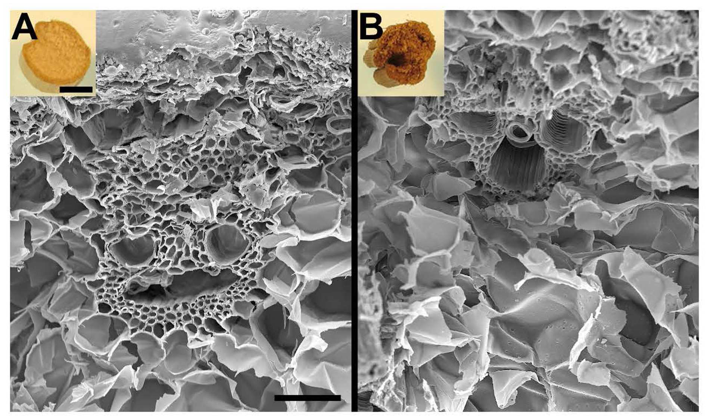
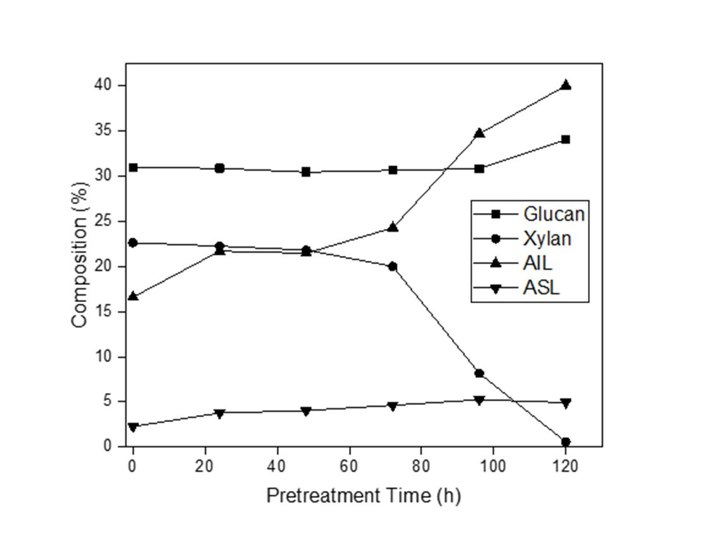

预处理技术突破
预处理的重要性
预处理是纤维素乙醇生产链条中成本第二高的环节（占总成本约18-20%）， 其目的是打破木质纤维素的天然屏障，使纤维素链暴露出来以便后续酶解。 主流方法包括：
- 稀酸预处理（Dilute Acid）：成本低，但产生抑制物，需废水处理
- 蒸汽爆破（Steam Explosion）：工业化程度较高，但能耗大
- AFEX（Ammonia Fiber Expansion）：氨回收率高，但处理效果对原料种类敏感
- SAA（Soaking in Aqueous Ammonia）：条件温和，但处理时间长
新一代氨处理技术
2019-2021年间，氨基预处理领域出现了两代重要迭代—— 从AFEX到EA（Extractive Ammonia），再到ELLA（Enhanced Low-Liquid Ammonia）， 显著提升了纤维素可及性和酶解效率。


氨基预处理技术演进路线
放大效应风险
实验室条件下的预处理效果在工业规模放大时往往大打折扣。 Abengoa（2016年破产）和DuPont（2017年出售装置） 的失败案例均表明：预处理环节的工程放大风险被严重低估。 氨回收系统的腐蚀、能耗和安全性在实验室阶段难以充分暴露， 而这些恰恰是决定工业可行性的关键因素。